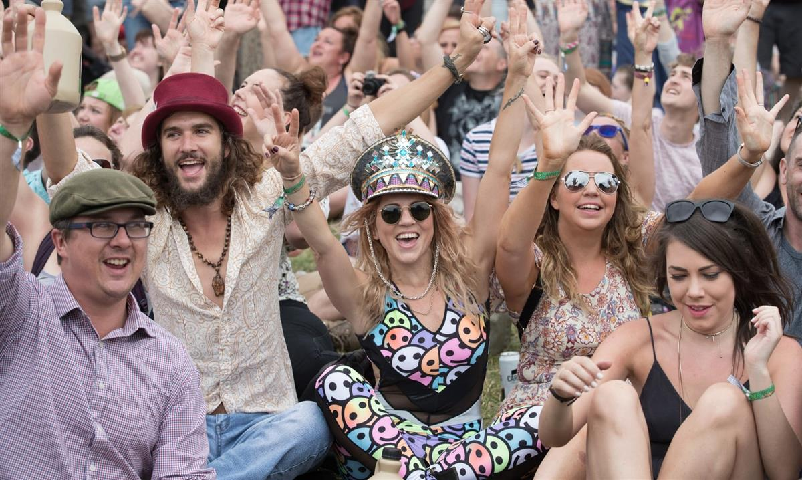
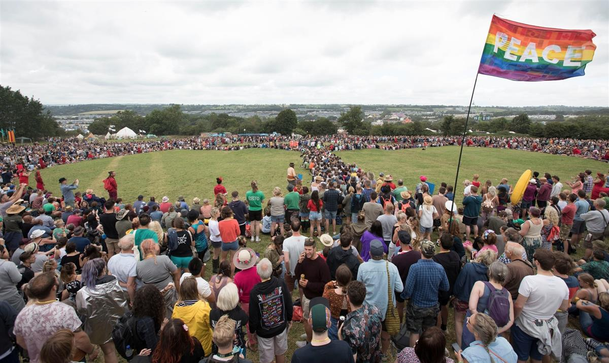
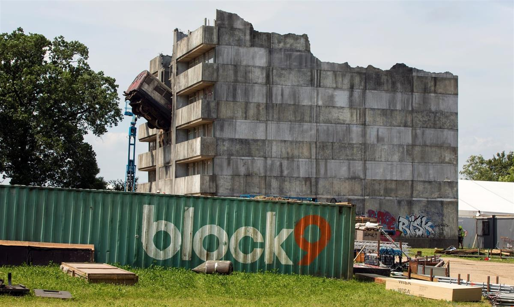

People form a giant peace sign at Glastonbury. Photograph: Andy Eliot/PA
Organisers say event is ‘message of peace to the world’ after series of terrorist attacks
About 15,000 people gathered at Glastonbury’s monumental stone circle on Thursday to set a new record for making the world’s biggest human peace sign.
The event was one of the first to display a spirit of unity in the face of recent terrorist attacks in Manchester and London, as the festival officially opens on Friday.
Organised by the team who run Glastonbury’s green fields as a “message of peace to the world”, the attempt broke the previous record when 5,814 people performed a similar stunt at Ithaca festival in New York in 2008. Among those taking part were Emily Eavis and William Hawk, a Native American from the Standing Rock reservation.
Cat Warren, 22, from Bristol, was held aloft on the shoulders of her friends – all part of a cheerleading team – to cheers from the crowd.
“There are worries that things like the attacks in Manchester and London are just going to divide people, and make people more hateful towards minorities,” said Warren. “So just coming together and celebrating with people from all ages, races and religions, it feels so lovely. It’s almost like a protest to anyone who is being hateful and shows we’re not afraid. We could do with a bit more of this outside of Glastonbury.”

Some of the people forming the peace sign at Glastonbury. Photograph: Matt Cardy/Getty ImagesWarren admitted she had been worried to come to Glastonbury out of fear it could be a target but said: “Then I just thought, you know what, I’m not going to miss out and not have my fun just because of scaremongering. That’s exactly what they want.”
She was echoed by Martin Goodman, 51, who stood with his wife Lisa, 50, who had driven down from Manchester. “It’s all about togetherness, really,” he said. “In this climate it feels important to come together and do something positive. The country’s had a hard time and we’ll do anything to try and get it back on its feet. We’re from Manchester so we’ve felt that really close to home but no way that’s going to stop me coming.”
Eavis was among those in the human peace sign and the shambolic but spirited event was watched over by Hawk, who led prayers for the victims of the recent tragedies and encouraged the crowd to put their hands on each other’s shoulders to create “a human connection”.
“We don’t need this in our world,” he told the crowd. “Peace and love comes about simply by giving peace and love.”

Making the peace sign. Photograph: Alicia Canter for the Guardian
Rachel Haddock, 31, stood in the middle of it all. “Glastonbury is always something that’s quite defiant to the outside world, but still, I think it’s pretty amazing that everyone’s just carried on and come here,” she said.
“Walking up here I got a tingly feeling, which sounds all hippy or whatever, but it’s just so nice everyone coming together in spite of everything that’s happened recently. Just a finger up to it all really.”
Beth Llewellyn, who was behind the record attempt, said: “I thought: ‘Why don’t we get together in the fields, and make this sign around the stone circle with people whose intent is for peace and not to be threatened by the few? We’re just doing it for love.”
Security at the 360-hectare (900-acre) festival, which is being headlined by Radiohead, Foo Fighters and Ed Sheeran, is tighter than during previous years, and police dogs searched bags for explosives and illegal substances as people entered the site.
In the run-up to festival season, counter-terrorism chiefs launched a major training drive for festival workers.
The festival has also arranged special shuttle buses around the site for those who are fearful of crowds after the terrorist attacks. The service has been introduced after Alison Davies, 37, who was at the Ariana Grande concert in Manchester that was hit by a suicide bomber, contacted Glastonbury to express her fears about attending.
In light of the Grenfell Tower fire, the creators of the late-night dance area Block 9 have put up a plaque clarifying that their installation – which features a blasted and burnt-out tower block – was erected before the disaster and any potentially tasteless similarity is “purely coincidental”.

The Block 9 installation before the opening of the festival. Photograph: David Levene for the Guardian“The team behind Block 9 at Glastonbury have been deeply moved by the terrible tragedy at Grenfell Tower in London and send our love and support to all those affected,” reads the message.
“The London Underground, created in 2010, depicts a tube train bursting from a London tower block. We would like to make it clear that any similarity between Grenfell Tower and The London Underground is purely coincidental.”
The designers Gideon Berger and Stephen Gallagher emphasised that it had been up at the festival for the past seven years. The sign also urged people to make donations to the Red Cross Grenfell Tower Relief Fund donation boxes that will be at the stage bar.
In an interview with the Glastonbury Free Press, the daily on-site newspaper, Michael Eavis spoke about his desire to make the festival a place where a new way of thinking about the world could flourish.
“I think the fact I love life so much is why I want to preserve it,” said Eavis. “We have to move heaven and earth now to save this planet. That’s the message I’d like people to take away. But of course the main purpose for being here is to have the best time of their lives.”
Despite queues on Wednesday morning owing to the extra security measures, by Thursday festivalgoers were getting access to the site quickly.
The extreme heat of Wednesday, which was the hottest day on record at Glastonbury and resulted in nine people being taken to hospital, had also cooled down by the official start of the festival, with light showers in the early morning and thick cloud rolling over.
The forecast remained variable but bookmakers were offering 2-1 odds that this year could be the driest in festival history.
SOURCE: The Guardian